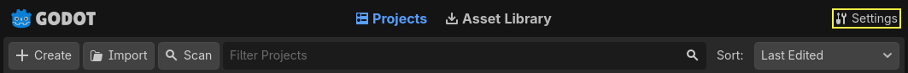
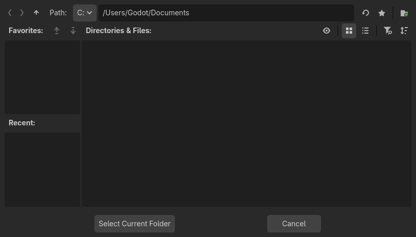
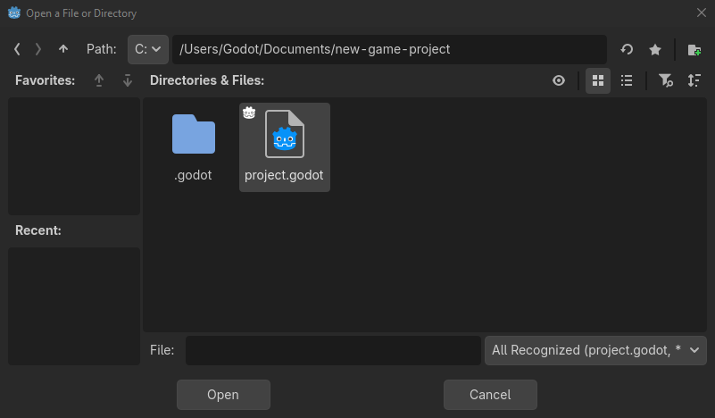
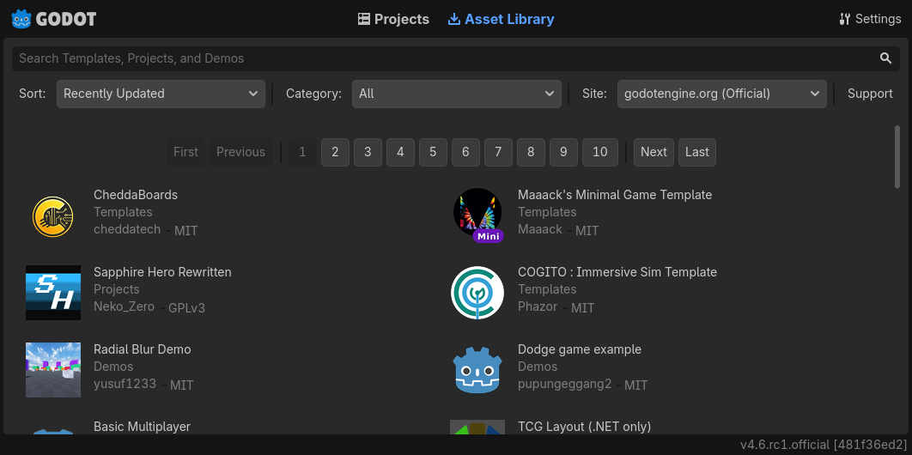

Using the Project Manager
When you launch Godot, the first window you see is the Project Manager. It lets you create, remove, import, or play game projects:

To change the editors language click on the Settings Button in the top right corner:

In Project Manager Settings, you can change the interface language from the language dropdown menu, which is the system default language by default.
You can also change the theme and color preset of the editor, the display scale for different interface element sizes, and the availability of online functionality using network mode. If network mode is online, Godot will also check and inform you about new versions of Godot.
The directory naming convention can also be changed to replace spaces according to the chosen format when creating folders automatically.

Creating and importing projects
To create a new project:
Click the Create button on the top-left of the window.
Give the project a name, then open the file browser using the Browse button, and choose an empty folder on your computer to save the files. Alternatively, you can enable Create Folder option to automatically create a new sub-folder with the project name, following the directory naming convention set in the settings. An empty folder will show a green tick on the right.
Select one of the renderers (this can also be changed later).
Click the Create button to create the project folder and open it in the editor.

Note
You can optionally choose a version control system. Currently, only git is supported and it needs the Godot Git Plugin to be installed, either manually or using the Asset Library. To learn more about the Godot Git Plugin, see its wiki.
Using the file browser
From the Create New Project window, click the Browse button to open Godot's file browser. You can pick a location or type the folder's path in the Path field, after choosing a drive.
Left of the path field on the top row contains arrows to navigate backward and forward through the last visited locations. The up arrow navigates to parent folder. On the right side of the path field, there are buttons to refresh the current folder's contents, favorite/unfavorite the current folder, and show/hide hidden folders.
Next, the buttons to switch the display type of the folders and files between grid view and list view are seen.
The last button on the right will create a new folder.
Favorited folders will be displayed on the left side under the Favorites section. You can sort the favorites using the up and down buttons in this section. Last chosen folders will be listed under the Recent list.

Opening and importing projects
The next time you open the Project Manager, you'll see your new project in the list. Double click on it to open it in the editor.

You can similarly import existing projects using the Import button. Locate the folder that contains the project or the project.godot file to import and edit it.

Alternatively, it is possible to choose a zip file to be automatically extracted by Godot.
When the folder path is correct, you'll see a green checkmark.

Downloading demos and templates
From the Asset Library tab you can download open source project templates and demos from the Asset Library to help you get started faster.
The first time you open this tab you'll notice that it's asking you to go online. For privacy reasons the project manager, and Godot editor, can't access the internet by default. To enable accessing the internet click the Go Online button. This will also allow project manager to notify you about updates. If you wish to turn this off in the future go into project manager settings and change Network Mode to "Offline"
Now that Godot is connected to the internet you can download a demo or template, to do this:
Click on its title.
On the page that opens, click the download button.
Once it finished downloading, click install and choose where you want to save the project.

Managing projects with tags
For users with a lot of projects on one PC it can be a lot to keep track of. To aid in this Godot allows you to create project tags. To add a tag to a project click on the project in the project manager, then click on the Manage Tags button

This will open up the manage project tags window. To add a tag click the plus button.

Type out the tag name, and click OK. Your project will now have a tag added to it. These tags can be used for any other project in your project manager.
To show projects with a specific tag only, you can click on the tags or write tag:
and type the tag you would like to search for in the filter bar. To limit the results
using multiple tags, you can click on another tag or add tag: after
a space and type another tag in the filter bar.
In addition, tags will stay with projects. So if you tag your project, send it to another machine, and import it into the project manager you will see the tags you created.
To remove a tag from your project manager it must be removed from all the projects it's used by. Once that's done close the project manager, open it up again, and the tag should be gone.
Recovery Mode
If a project is immediately crashing on startup, or crashing frequently during editing it can be opened in recovery mode, to attempt to make it more stable while looking for the source of the crashing to fix it.
Usually a project should open in recovery mode automatically when you re-open it
after a crash. If it doesn't you can manually open recovery mode by selecting the
project in the project manager, to do that select the project from your list of
projects, click the dropdown button next to the edit node, and select Edit in
recovery mode.

While in recovery mode the following are disabled:
Tool scripts
Editor plugins
GDExtension addons
Automatic scene restoring
Running the project
It is recommended that you backup your project before editing it in recovery mode.